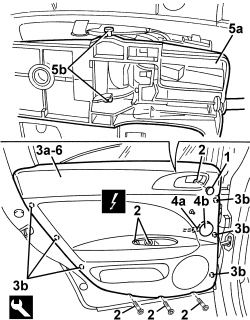

7010E10 REAR SIDE DOOR INNER PANEL - R.R. OR REPLACE
- Path
- Procedures > 70 FITTINGS > 7010 PASSENGER COMPARTMENT REAR SIDE DOORS > 7010E REAR SIDE DOOR TRIM > 7010E10 REAR SIDE DOOR INNER PANEL - R.R. OR REPLACE
- Kind
- repair procedure (removal / refitting; the operation number is the code)
- Applies to
- all engines; all production periods
- Interactive page
- https://sloeber94.github.io/elrnDB/#/939011186
Applies to: all engines; all production periods
 Removing
Removing
 Refitting
RefittingOp. 7010E62 REAR DOOR INNER REAR PANEL (ONE) LH OR RH - R R
Op. 7010E38 REAR SIDE DOOR INTERIOR HANDLE-R R
For vehicles with manual windows
1.Release the trim cover.
2. Undo the bolts.
3. Move the panel (3a) slightly releasing the inner retainers (3b) using the special tool.
Tool | Description | Function | Validity |
|---|---|---|---|
1823015000 | Knife | Retainer removal |
4. Raise the panel to release its upper part, then disconnect electrical connection (4a) of tweeter (4b).
Description | Component |
|---|---|
LEFT REAR TWEETER SPEAKER | |
RIGHT REAR TWEETER SPEAKER |
5. Releaase the retainers (5a) for the interior handle (5b).
6. Keep the inner panel.

Applies to: all engines; all production periods
Refitting
Removing- Check that the inner panel is not damaged.
- Attach the interior handle retainers.
- Connect the electrical connection for the tweeter.
- Place the panel in position and attach the inner retainers.
- Tighten the bolts.
- Fit the trim cover.
Op. 7010E38 REAR SIDE DOOR INTERIOR HANDLE-R R
Op. 7010E62 REAR DOOR INNER REAR PANEL (ONE) LH OR RH - R R
- Check that the dismantled parts are working.
Topics linked from this page (5)
- 7010D38 REAR SIDE DOOR MANUAL WINDOW OPENING MECHANISM HANDLE/RING NUT (ONE), LEFT OR RIGHT - R.R
- 7010E38 REAR SIDE DOOR INTERIOR HANDLE-R R
- 7010E62 REAR DOOR INNER REAR PANEL (ONE) LH OR RH - R R
- P047 LEFT REAR TWEETER SPEAKER
- P048 RIGHT REAR TWEETER SPEAKER
Topics that link to this page (20)
- S063 REAR DOORS CREAKING
- 5505B21 REAR DOOR WIRING (ONE) LEFT OR RIGHT - R.R
- 5570T94 REAR TWEETER (ONE), LH OR RH - R R
- 5570T96 REAR SIDE SPEAKER (ONE), LEFT OR RIGHT- R.R
- 7010A09 REAR SIDE DOOR INTERIOR SUPPORT FRAME - R.R.
- 7010A28 REAR SIDE DOOR OPENING LIMITER - R.R
- 7010C11 REAR SIDE DOOR EXTERIOR HANDLE - R.R
- 7010C53 INTERIOR HANDLE FOR REAR DOOR OPENING MECHANISM (ONE) LEFT OR RIGHT - R.R.
- 7010C65 CONNECTING ROD FROM EXTERIOR HANDLE TO REAR SIDE DOOR LOCK - R.R.
- 7010D12 REAR SIDE DOOR DESCENDING WINDOW GLASS FASTENING ELEMENT (ONE), LEFT OR RIGHT - R.R.
- 7010D15 REAR SIDE DOOR DESCENDING WINDOW GLASS (ONE), LEFT OR RIGHT - R.R
- 7010D21 FRONT SIDE DOOR GLASS FRONT GUIDE (1), LH OR RH - R R
- 7010D30 REAR SIDE DESCENDING WINDOW GLASS SCRAPER (INNER) R R
- 7010D33 CHANNEL FOR DOOR DESCENDING GLASS INNER GUIDE (ONE) LEFT OR RIGHT FOR REAR SIDE DOOR - R.R.
- 7010D35 REAR SIDE DOOR MANUAL WINDOW MECHANISM (ONE), LEFT OR RIGHT - R.R.
- 7010E50 REAR SIDE DOOR PILLAR TRIM (ONE) LEFT OR RIGHT - R.R.
- 7010N21 REAR SIDE DOOR LOCK MOTOR/LOCK ASSEMBLY, LEFT OR RIGHT - R.R
- 7010M21 REAR SIDE DOOR ELECTRICALLY-OPERATED WINDOW, LEFT OR RIGHT - R.R.
- 7010M26 ELECTRIC WINDOW OPENING MECHANISM FOR ONE REAR DOOR LH OR RH - R.R
- 7205E38 STRIPPING REAR SIDE DOOR